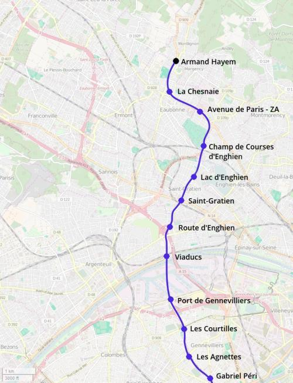
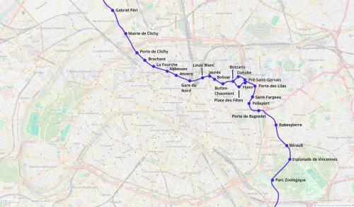
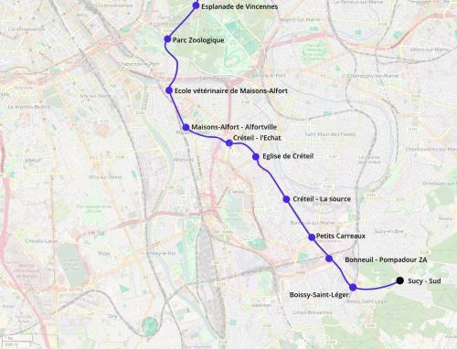

Métro Nord
Métro Nord
Margency - Boissy-Saint-Léger
Création de la ligne nord du métro.
Le métro nord est une proposition de ligne de métro qui permettrait de concrétiser des idées qui étaient envisagées depuis longtemps.
Dans la partie nord-ouest de la ligne, le tracé permettrait de desservir le port de Gennevilliers en venant du nord ou du sud, offrir une correspondance avec la tangentielle Seine-Saint-Denis à Argenteuil - Viaducs, le RER C à Saint-Gratien et le transilien H à Champ de Course d'Enghien.
Dans Paris, il reprendrait la branche Clichy du métro 13 qui serait détachée du tronc commun et permettrait de soulager la ligne 2 entre place de Clichy et Barbès-Rochechouard tout en fournissant une correspondance vers la gare du Nord. Ensuite il reprendrait le trace fusionné des lignes 7 bis et 3 bis de Louis Blanc à Pelleport via Porte des Lilas.
Le métro nord sortirait de Paris par la porte de Bagnolet pour connecter Montreuil à la station de Vincennes RER, traverserait le bois de Vincennes pour desservir l'école véterinaire de Maisons-Alfort et la gare de Maisons-Alfort - Alfortville. Le tracé repartirait ensuite vers l'est pour suivre la route nationale 19 entre l'Église de Créteil et Boissy-Saint-Leger.
Cartes
{kind=link}

Cliquer pour agrandir
{kind=link}

Cliquer pour agrandir
{kind=link}

Cliquer pour agrandir
Stations
Si ce projet vous intéresse n'hésitez pas à le (re-)partagez sur les réseaux sociaux ou par courriel ou à en parler autour de vous.
Si vous souhaitez travailler à la concrétisation de ce projet, passez à l'action et contactez nous.
Commenter